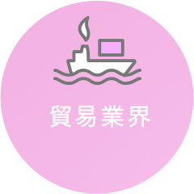
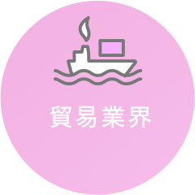

韓国を学ぼう
＼ 韓国語を習得するだけで終わらない！ ／
＼ 韓国語を習得するだけで終わらない！ ／
相模女子大学の
4つの学びのポイント

学びにつながる、多彩な分野

相模女子大学では、韓国に関するあらゆる分野の専門的な学びが用意されています。多角的なテーマから、あなたの「もっと知りたい」学びを見つけましょう！
合わせたスキルアップ
安心の担任制に加え、AIなどの最新技術を活用してそれぞれの学習をサポート。トークスクリプトの作成やシーン別会話の再現など、細かいニーズに合わせて苦手を克服します。

での語学研修
学内の学びだけでなく、単位認定を受けながら韓国のソウル女子大学や、延世大学、高麗大学等で語学研修に参加できる制度を用意。韓国語を学ぶ授業と韓国文化を体験する授業があり、学内外を往復した学びで深めます。
手厚い就職サポート
相模女子大学の学びは、ただ語学習得するだけではありません。学科独自の就職支援「就活シミュレーション」をはじめ、身につけたスキルを社会での活躍に繋げるサポートが充実しています。
相模女子大学 国際コミュニケーション学科では
中学校・高等学校教諭一種免許状（英語）が
取得できるほか、
の資格取得も目指せます。
韓国政府が主催する試験で、韓国語が母語話者でない人を対象にしています。韓国語能力の客観的評価として広く認められており、韓国での留学や大学進学、企業就職でも評価基準として導入されていることが多い資格です。
国際コミュニケーション学科では
あなたの「好き」に応じた
5つの履修プログラムで学びが深まります！
英語や韓国語を通して、国々の関わり方を考える
コミュニケーション力を高め、人との繋がりを考える
英語の指導法や教育について考える

英語のスキルを磨き、語学の生かし方を考える
国際的な視野を土台として、実践的な場で活動する
プログラムを掛け合わせて
学ぶことで
多彩な進路へ
 

新設される相模女子大学の
国際コミュニケーション学科について
もっと知りたい人はこちら！